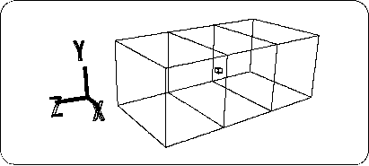
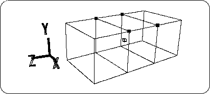
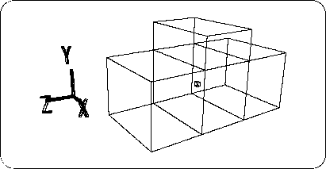
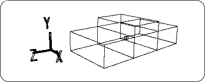

Return to previous page | Return to menu | Go to next page
Next, create a roof.
[Effect] → [Subdivision]
Select (number of dividing lines to divide each surface in each direction of XYZ). This is used to divide an object in the axial direction (X, Y, Z). This is the best command for splitting a cuboid like this one (but not for spherical ones).
When the “Mesh Subdivision” dialog appears,
X: 0, Y: 0, Z: 2
And click “OK” (Figure 3-4).

Caution
Please note that the input value “Z: 2” above is not divided into two in the Z-axis direction, but is divided into three in the sense that “two lines are drawn”.
Next, set the points in the figure (four points corresponding to the position of the roof) to TAG (Figure 3-5).
(Use "T" key + left mouse button to enclose the point)

Here, when you look at the lower right part of the screen, the “OBJ” part is highlighted in blue. Click the “TAG” part to switch the mode to TAG mode. The “TAG” part is highlighted in blue, and you can move the TAG in the figure.
[Duplicate] → [Immidiate]
Select and copy the four red points. As with the TV monitor in Chapter 2 for beginners, nothing appears to change, but the TAGed point is duplicated at the same position. In addition, please do it once at the time of Duplicate. No matter how many times you do it, it will be duplicated in the same position, so you won't know how many times you have done it. For this reason,
[Duplicate] → Move point → [Duplicate] → Move point ...
It is safe to do Duplicate once.
AfterCaution
Duplicate cannot be identified because the duplicated point is placed at the same position as the duplicated point. After Duplicate, move the position quickly with [Trans].
Duplicate, click so that only the [TransY] icon is highlighted in white, and try moving the TAG (4 copied points) in the + Y direction. While looking at the Front window (1 square is 1m), move the TAG until the value of Y reaches around 1.5m (Figure 3-6).

When you are done, remove TAG (use "T" key + middle mouse button to enclose the dot).
If you really want Y to be 1.5m,
[Edit] → [Coodinate]
Select and try to select a new point. A window called “Edit Coodinate” will appear and the coordinates of the selected point will be displayed.
Here, enter Y: 1.5 and click “OK” (do not change any other values). Do this for all four points.
Now it has become too long in the Y direction.
Click the triangle corner in the [Scale] icon.
Oh? Even if you click, the window will not open. And below is “There are no tagged points.” And Warning. Because the setting is currently in TAG mode, Scale, Rot, and Trans cannot be selected when there is no TAG point.
This time we will scale the entire object, so we will switch to OBJ mode. Once in OBJ mode,
Click the triangle corner in the [Scale] icon. When the window opens,
X: 1, Y: 0.5, Z: 1 (halve the height)
And click “Set” (Figure 3-7). And to make this state the reference value,
[Effect] → [Freeze] → [Scaling]
Choose.
